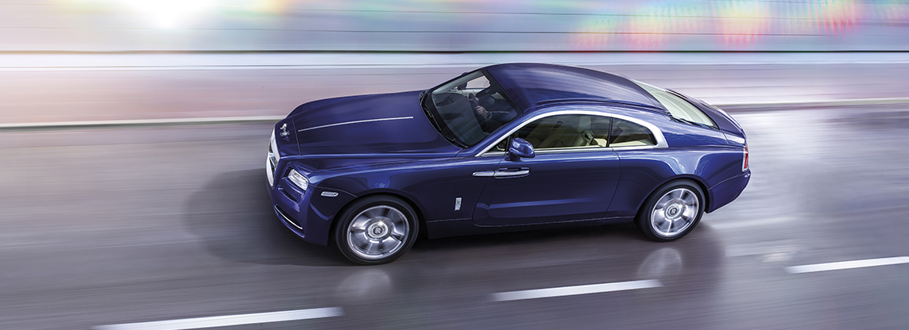
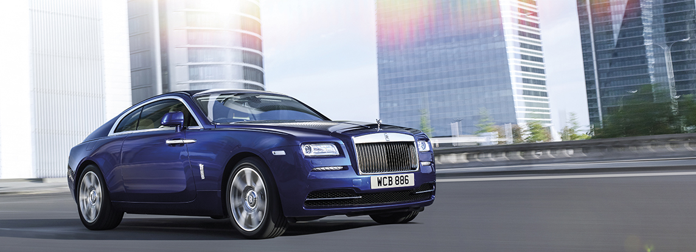
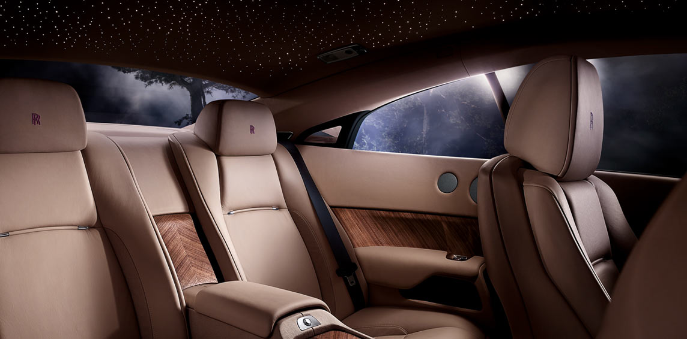
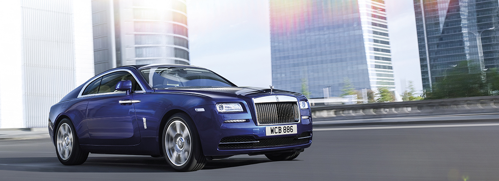
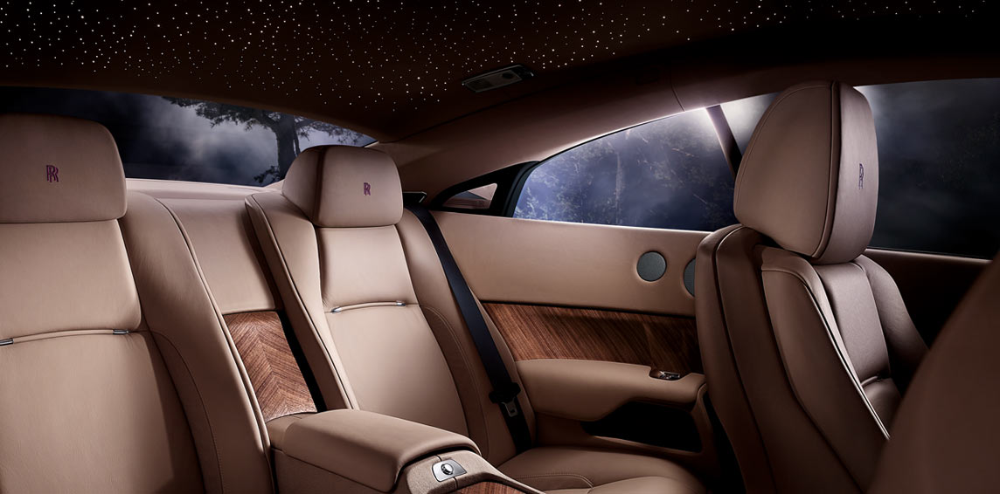
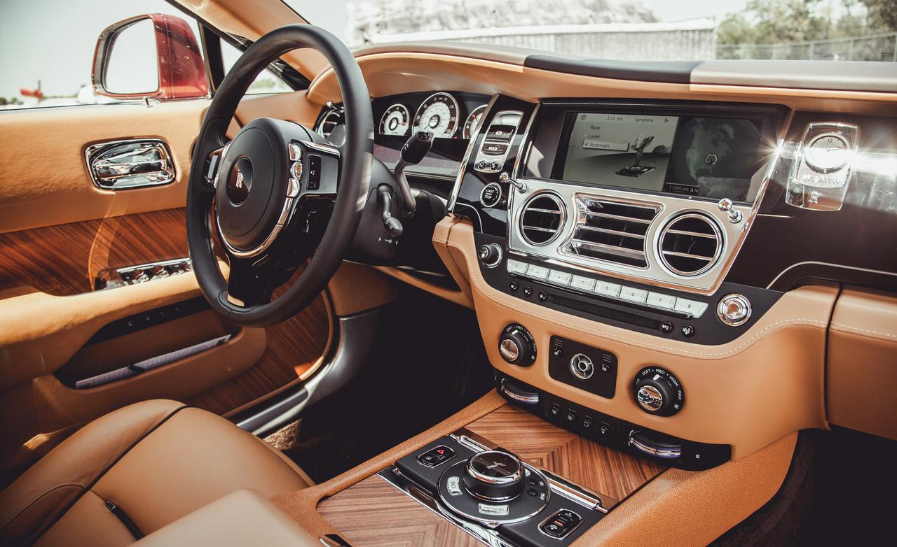

Wraith, the boldest expression of Rolls-Royce yet. The striking fastback silhouette exudes elegance and power. The aerodynamic lines and wide rear track reinforce the promise of athletic prowess and dynamism, which is further accentuated by the prominent shoulders.
Wraith’s alluring presence ensures that it always commands attention. Accentuate that sense of dramatic purpose with their collection of beautifully crafted exterior accessories. Choose from a selection of highly exclusive items, which can be fitted by your appointed Rolls-Royce Dealer, to give Wraith your own personal signature.
 



Wraith is lovingly hand built by skilled craftspeople and technicians. To complement their work, the Wraith Accessory Collection combines stunning design and intricate detail to create a unique expression of your personality.
With their interior and technology accessories, you can connect seamlessly to the outside world while cocooned in luxury.